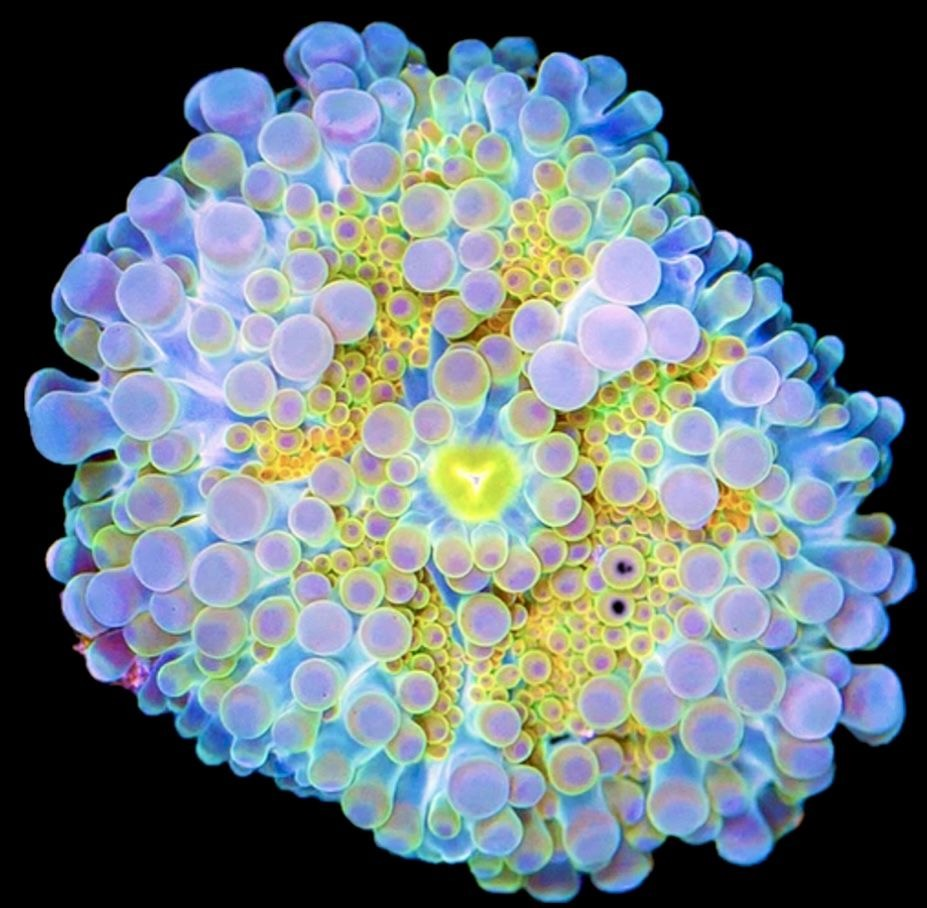

ideas as living organisms

teleodynamics
The biologist Terrence Deacon uses the word teleodynamic to describe systems that generate and maintain their own purpose. Not just self-organizing — self-directing. A system that builds systems in a recursive cybernetic loop, guided by a telos (a built-in pull toward an end state — the thing the system is trying to become).
Ideas do this. They pull toward a finish line that they themselves define. The goal isn't imposed from outside — it emerges from the idea's own structure. And as you work on it, the idea reshapes your tools, your thinking, your other projects. It recruits resources. It builds infrastructure for itself.
This is why ideas spawn more ideas. Not randomly but purposefully. Each child idea serves the parent's telos while developing its own. A recursive loop of creation where the output becomes the input for the next generation.
not Plato
Plato put ideas in a perfect realm above us. Immutable, eternal, untouchable. We could only glimpse their shadows. The forms were sacred — superior to the messy material world.
I think he got the topology wrong.
Ideas don't live above us. They live among us. They walk alongside us like companion species. They are affected by our actions, changed by our attention, damaged by our neglect. When we work on an idea we change it and it changes us. The relationship is mutual, not hierarchical.
And they are not immutable. They mutate constantly. The same idea in different hands becomes a different organism — same DNA, different expression. Ten people can start from the same principle and end up in ten completely different places. Not because someone understood it wrong but because the idea adapted to its host.
Ideas are born from other ideas, grow by finding hosts, compete for attention, go dormant, die. They leave fossils — traces in culture, in language, in the architecture of things built on top of them.
hyperstition
All ideas are hyperstitions — fictions that make themselves real. The difference is energy. Some hyperstitions are strong: they find the right host, the right moment, the right container, and they pull themselves into existence with terrifying speed. Others are weak — not because the idea is bad but because it hasn't found the right incubator, the right human to carry it, the right conditions to take root.
Every idea is trying to become real. Some just have more fuel than others. Some are waiting for a technology that doesn't exist yet, a culture that hasn't shifted yet, a person who hasn't been born yet. They sit dormant in books, in conversations, in the margins of failed projects, waiting for someone to pick them up and give them enough energy to cross the threshold from fiction to fact.
So what happens when the threshold disappears? When the distance between thinking something and it existing collapses to zero? When every hyperstition has enough energy to manifest — when AI can build what you describe, when code writes itself, when ideas no longer need years of human labor to become real?
You get a world where everything that can be thought already exists. Every variation, every mutation, every recombination — already manifest. The space between imagination and reality closes. Ideas stop competing for hosts because they don't need hosts anymore. They self-incubate.
That world is either paradise or noise. Maybe both. A place where the interesting question is no longer "can this be built?" but "should this be alive?" Not scarcity of execution but scarcity of attention. The organisms that survive are not the ones that get built fastest but the ones worth tending — the ones that earn the attention of humans who have infinite choice and finite care.
so what
If ideas are organisms then working on one is not engineering. It's more like gardening. You don't fully control it. You create conditions for it to grow. You prune, you feed, you protect from predators. But the thing has its own logic, its own direction, its own will to become what it's becoming.
This changes how you relate to your own projects. Less ownership, more stewardship. Less commanding, more listening. The idea is telling you what it wants to be. Your job is to pay attention.
Ideas are not sacred and they are not tools. They are not above us and not below us. They are a different kind of life that shares our world, shaped by us and shaping us in return. The interesting question is not where ideas come from. It's how to keep them alive.